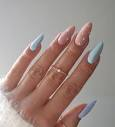

unhas de fibra

procedimento

Vamos conferir em detalhes como o procedimento acontece: Primer. O primeiro passo é usar um primer para alongamentos. ... Capa-base. Quando o primer secar, passe uma camada fina de gel para a capa-base. ... Molde. ... Primeira camada de gel. ... Camada de fibra de vidro. ... Segunda camada de gel. ... Construa um ponto de tensão. ... Acabamento.